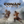

 Conan Exiles
Details
 |
|
| Playtime | Not Played |
| Last Activity | Never |
| Added | 10/29/2021 1:31:53 |
| Modified | Never |
| Completion Status | Not Played |
| Library | Xbox |
| Source | Xbox Game Pass |
| Platform | PC (Windows) |
| Release Date | 5/8/2018 |
| Community Score | |
| Critic Score | |
| User Score | |
| Genre | |
| Developer | Funcom |
| Publisher | Funcom |
| Feature | |
| Links | |
| Tag | Game Pass |
Description
Conan Exiles is an online multiplayer survival game, now with mounts and mounted combat, set in the lands of Conan the Barbarian. Survive in a savage world, build your kingdom, and dominate your enemies in brutal combat and epic warfare.
Start with nothing but your bare hands and forge the legacy of your clan, building anything a small home to gigantic fortresses and entire cities. Wage war using swords, bows, siege weapons, and even take control of giant avatars of the gods and lay waste to enemy cities.
Explore a vast, seamless world full of challenge and opportunity. Hunt animals for resources, slay monsters for treasure, and delve deep underground to discover the secrets of ancient civilizations.
Conan Exiles can be experienced in both local single-player and in persistent online multiplayer.
GAME FEATURES:
• EXPLORE A VAST WORLD: Explore a giant world, from the burning desert in the south to the snow-capped mountains in the north. Discover ancient cultures, ruins, and dungeons.
• SURVIVE: Stay warm, cool yourself down, drink and eat, weather scouring sandstorms, prevent your mind from being corrupted when exploring dark dungeons, and battle vicious monsters to stay alive.
• BUILD: Harvest resources to craft tools and weapons, then build anything from a small home to entire cities piece by piece. Build walls, traps, elevators, and more, then deck out your creations with a wide variety of different furniture, crafting stations, and NPC guards.
• DOMINATE: Wage war against your enemies, use siege weapons and explosives and see their walls crumble to dust, then unleash your savage fury in violent and brutal combat.
• BUILD AN ARMY OF THRALLS: Capture NPCs, drag them back to your base, and use the Wheel of Pain to break their will. Turn them into archers, crafters, entertainers, and more for your settlements.
• BECOME A GOD: Sacrifice your enemies on the altar of your god then summon and take control of their huge, towering avatar. Crush enemies and entire buildings under your avatar’s feet.
• PLAY TOGETHER OR ALONE: Play alone locally or fight for survival and dominance in persistent multiplayer on public servers. You can also host your own server and invite others to join you.
Optimized for Xbox Series X|S with the following improvements:
• Increased resolutions and frame rates
• Increased shadow quality
• Higher shadow distance
• Increased texture quality
• Increased draw distance for foliage and grass
• Improved effects and postprocess quality
• Volumetric fog on Isle of Siptah expansion map